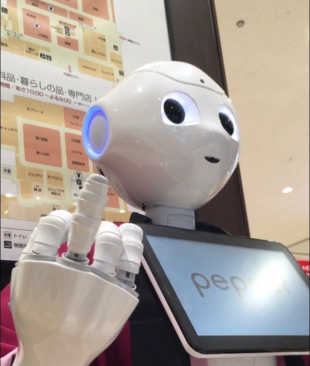
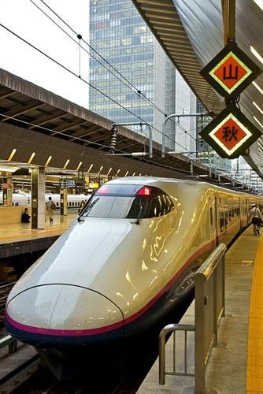
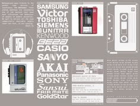

Robótica Avanzada
Japón es pionero en el desarrollo de robots inteligentes. Muchas empresas japonesas fabrican robots capaces de ayudar a personas mayores, trabajar en fábricas y realizar tareas complejas.
Algunos robots incluso pueden reconocer emociones humanas, responder preguntas y mantener conversaciones.

Trenes Bala
Los famosos Shinkansen son considerados algunos de los trenes más rápidos y seguros del planeta.
Gracias a su avanzada tecnología, millones de personas viajan diariamente a gran velocidad entre ciudades.
Industria Gamer
Japón revolucionó el mundo de los videojuegos con empresas como Nintendo, Sony y Sega.
Personajes como Mario, Sonic y Pokémon nacieron en Japón y se volvieron famosos mundialmente.

Electrónica
Japón lidera la producción de cámaras, televisores, computadoras y dispositivos electrónicos.
Empresas japonesas como Sony, Panasonic y Toshiba son referentes internacionales de calidad e innovación.
Inteligencia Artificial
Japón está invirtiendo millones en inteligencia artificial para crear ciudades inteligentes y mejorar la vida cotidiana.
Muchas empresas trabajan en asistentes virtuales, autos autónomos y tecnologías futuristas.